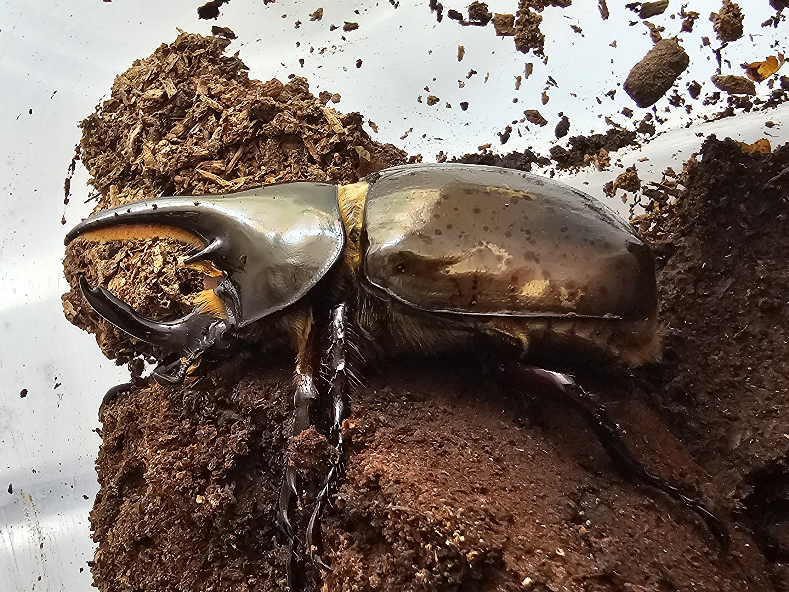
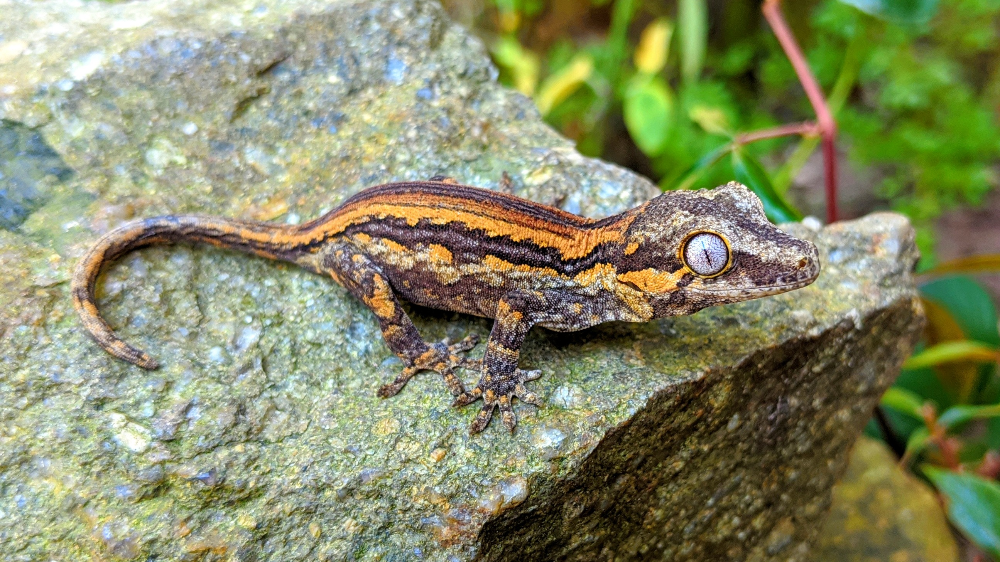
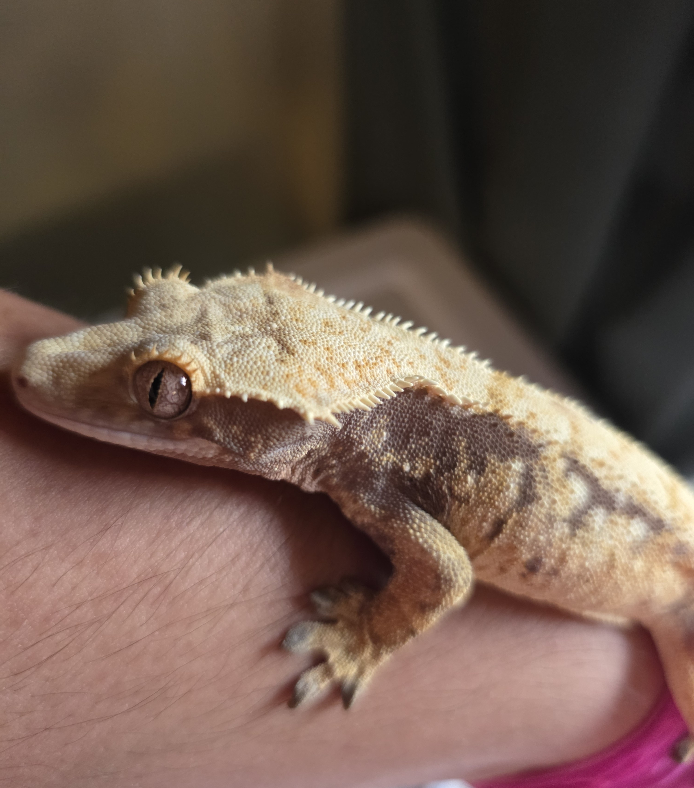
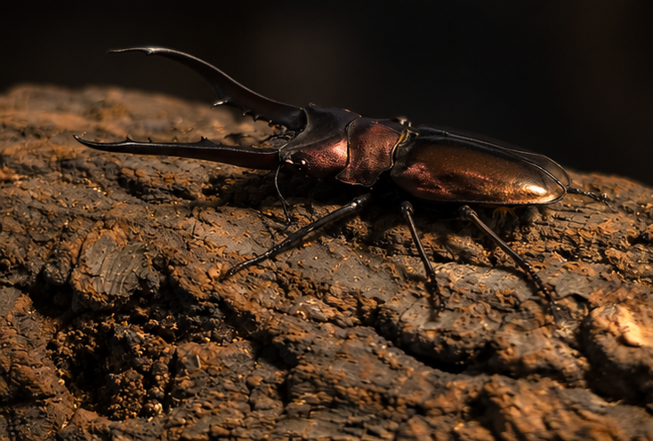

Featured Animals





Why Exotic Pets?
Reptiles and beetles are such rewarding animals to keep as pets. Many lizards and reptiles are comfortable living in their enclosures undisturbed. They do not require constant attention and bonding, such as other conventional pets. For some, this may be a turn off but for others, it opens a whole new world to a vast array of beautiful and rewarding animals.
Explore Our Animals
Crested Gecko
Also known as Correlophus ciliatus Are an arboreal species that are great climbers and are deceptively fast, when they want to be.
Gargoyle Gecko

Also known as Rhacodactylus auriculatus Is a slightly bigger and stockier gecko, when compared to the crested gecko.
Chahoua Gecko
Also known as Mniarogekko chahoua or even called by its species name chahoua. Is a comfortably big gecko that is able to use its tail like another leg. It can wrap around branches to help stabalize itself.
Beetles

Coleoptera is an order of insects also known as beetles. There are a vast array of beetles that are kept as pets, though, here we will focus on beetles that are known as rhino, stag, and flower beetles.